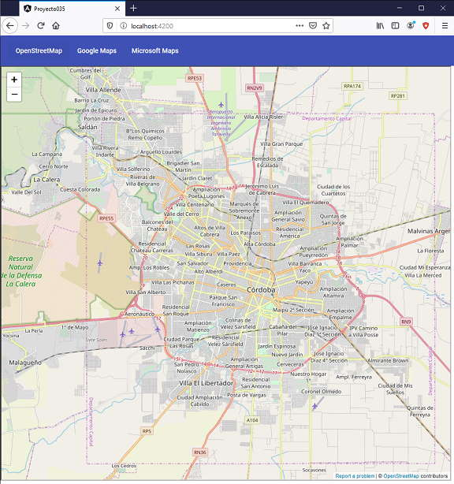

mat-toobar es una componente contenedora donde podemos disponer un título, encabezados y otras componentes de acción como pueden ser botones y menúes.
Disponer una componente de tipo mat-toolbar y dentro de la misma insertar tres botones. Según que botón se presiona, se debe mostrar en un iframe los mapas que suministra Google, Microsoft y OpenStreetMap.
Crearemos primero el proyecto
ng new proyecto035
Procedemos a instalar todas las dependencias de Angular Material ayudados por Angular CLI mediante el comando 'add':
ng add @angular/material
Modificamos el archivo 'app.module.ts' donde debemos importar MatButtonModule y MatToolbarModule:
import { BrowserModule } from '@angular/platform-browser';
import { NgModule } from '@angular/core';
import { AppComponent } from './app.component';
import { BrowserAnimationsModule } from '@angular/platform-browser/animations';
import { MatToolbarModule } from '@angular/material/toolbar';
import { MatButtonModule } from '@angular/material/button';
@NgModule({
declarations: [
AppComponent
],
imports: [
BrowserModule,
BrowserAnimationsModule,
MatToolbarModule,
MatButtonModule,
],
providers: [],
bootstrap: [AppComponent]
})
export class AppModule { }
Modificamos el archivo 'app.component.ts' con la lógica de nuestra componente:
import { Component } from '@angular/core';
import { DomSanitizer, SafeResourceUrl } from '@angular/platform-browser';
@Component({
selector: 'app-root',
templateUrl: './app.component.html',
styleUrls: ['./app.component.css']
})
export class AppComponent {
direcciones:string[] = [
"https://www.openstreetmap.org/export/embed.html?bbox=-64.35224533081056%2C-31.474206377544593%2C-64.06557083129884%2C-31.340295938751318&layer=mapnik",
"https://maps.google.com/maps?q=cordoba%20argentina&t=&z=13&ie=UTF8&iwloc=&output=embed",
"https://www.bing.com/maps/embed?h=800&w=800&cp=-31.416887181810054~-64.18859863281249&lvl=11&typ=d&sty=r&src=SHELL&FORM=MBEDV8"
];
urlSegura!: SafeResourceUrl;
constructor(private sanitizer: DomSanitizer) {}
ngOnInit() {
this.fijar(0);
}
fijar(pos: number) {
this.urlSegura = this.sanitizer.bypassSecurityTrustResourceUrl(this.direcciones[pos]);
}
}
Almacenamos las URL de los servicios de mapas en el arreglo 'direcciones:'
direcciones:string[] = [
"https://www.openstreetmap.org/export/embed.html?bbox=-64.35224533081056%2C-31.474206377544593%2C-64.06557083129884%2C-31.340295938751318&layer=mapnik",
"https://maps.google.com/maps?q=cordoba%20argentina&t=&z=13&ie=UTF8&iwloc=&output=embed",
"https://www.bing.com/maps/embed?h=800&w=800&cp=-31.416887181810054~-64.18859863281249&lvl=11&typ=d&sty=r&src=SHELL&FORM=MBEDV8"
];
Algo que no se nos había presentado hasta ahora es que cuando hacemos 'property binding' para enlazar la propiedad 'src' de un 'iframe', por seguridad Angular obliga analizar dicha URL mediante la clase DomSanitizer que la inyectamos como un servicio en el constructor.
constructor(private sanitizer: DomSanitizer) {}
Cuando presionemos alguno de los tres botones llamaremos al método fijar y procederemos a almacenar en el atributo 'urlSegura' que es de la clase SafeResourceUrl la dirección URL:
fijar(pos: number) {
this.urlSegura = this.sanitizer.bypassSecurityTrustResourceUrl(this.direcciones[pos]);
}
Codificamos la interfaz visual en el archivo 'app.component.html':
<div style="height: 100%;">
<mat-toolbar>
<button mat-button (click)="fijar(0)">OpenStreetMap</button>
<button mat-button (click)="fijar(1)">Google Maps</button>
<button mat-button (click)="fijar(2)">Microsoft Maps</button>
</mat-toolbar>
<iframe width="99%" height="92%" [src]="urlSegura">
</iframe>
</div>
Dentro de la etiqueta mat-toolbar disponemos las componentes que se deben mostrar en su interior, en este caso los tres botones:
<mat-toolbar>
<button mat-button (click)="fijar(0)">OpenStreetMap</button>
<button mat-button (click)="fijar(1)">Google Maps</button>
<button mat-button (click)="fijar(2)">Microsoft Maps</button>
</mat-toolbar>
Por otro lado para que se actualice el contenido del iframe definimos mediante la propiedad [src] la referencia al atributo "urlSegura" que dijimos que cambiaremos cada vez que se presiona un botón.
Si ejecutamos la aplicación tenemos como resultado:
Podemos probar esta aplicación en la web aquí.